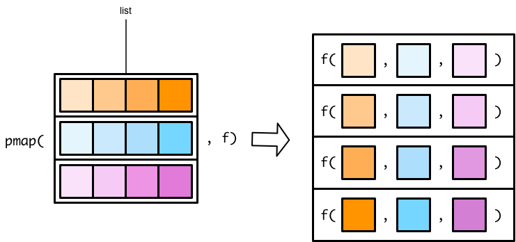
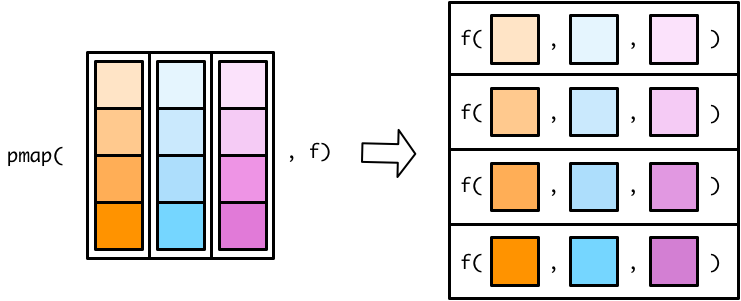

10 Map with multiple inputs
library(tidyverse)In the previous purrr units, you learned how to use the map() functions to iterate over a single vector and apply a function to each element. purrr also contains functions that can iterate over several vectors in parallel, supplying the first elements of each vector to a given function, then the second, then the third, etc.
purrr’s parallel mapping functions allow the assembly line to have multiple, synchronized input conveyor belts. Our factory worker uses the nth item from each input conveyor belt to create a new object that becomes the nth item on the output conveyor belt.
Below, you’ll learn about the map2() functions, which can handle two input vectors, and the pmap() functions, which can handle any number of input vectors.
10.1 map2()
The map2() functions are very similar to the map() functions you learned about previously, but they take two input vectors instead of one.

For example, here are two vectors, x and y.
x <- c(1, 2, 4)
y <- c(6, 5, 3)We can use a map2() variant to iterate along both vectors in parallel. The following code creates a new vector whose first element is the minimum of x[1] and y[1], second element is the minimum of x[2] and y[2], and third element is the minimum of x[3] and y[3].
map2_dbl(x, y, min)
#> [1] 1 2 3Since the map2() functions iterate along the two vectors in parallel, they need to be the same length.
x2 <- c(1, 2, 4)
y2 <- c(6, 5)
map2_dbl(x2, y2, min)
#> Error: Mapped vectors must have consistent lengths:
#> * `.x` has length 3
#> * `.y` has length 2Inside anonymous functions in the map() functions, you refer to each element of the input vector as . . In the map2() functions, you refer to elements of the first vector as .x and elements of the second as .y .
map2_chr(x, y, ~ str_glue("The minimum of {.x} and {.y} is {min(.x, .y)}."))
#> [1] "The minimum of 1 and 6 is 1." "The minimum of 2 and 5 is 2."
#> [3] "The minimum of 4 and 3 is 3."If you don’t create an anonymous function and use a named function instead, the first vector will be supplied as the first argument to the function and the second vector will be supplied as the second argument.
Remember that tibble columns are vectors, so you can use map2() inside mutate() to alter tibble columns.
df <-
tibble(
a = c(1, 2, 4),
b = c(6, 5, 3)
)
df %>%
mutate(min = map2_dbl(a, b, min))
#> # A tibble: 3 × 3
#> a b min
#> <dbl> <dbl> <dbl>
#> 1 1 6 1
#> 2 2 5 2
#> 3 4 3 3By default, mutate() uses column-wise operations. map2_dbl() produces a column the same length at a and b. We can accomplish the same calculation using row-wise operations.
df %>%
rowwise() %>%
mutate(min = min(a, b)) %>%
ungroup()
#> # A tibble: 3 × 3
#> a b min
#> <dbl> <dbl> <dbl>
#> 1 1 6 1
#> 2 2 5 2
#> 3 4 3 310.2 pmap()
There are no map3() or map4() functions. Instead, you can use a pmap() (p for parallel) function to map over more than two vectors.
The pmap() functions work slightly differently than the map() and map2() functions. In map() and map2() functions, you specify the vector(s) to supply to the function. In pmap() functions, you specify a single list that contains all the vectors (or lists) that you want to supply to your function.

Flipping the list diagram makes it easier to see that pmap() is basically just a generalized version of map2().

The only difference is that map2() lets you specify each vector as a separate argument. In pmap(), you have to store all your input vectors in a single list. This functionality allows pmap() to handle any number of input vectors. Here’s our earlier map2() statement.
map2_dbl(x, y, min)
#> [1] 1 2 3To do this in pmap(), just create a list out of x and y.
pmap_dbl(list(x, y), min)
#> [1] 1 2 3If you only have two input vectors, though, use map2(). If we want to apply min() to parallel elements of three vectors, we’ll need to use pmap().
z is a third vector.
z <- c(100, 15, 1)Again, we need to combine all the individual vectors into a single list in order to use pmap().
pmap_dbl(list(x, y, z), min)
#> [1] 1 2 1Tibbles are lists, so we could also combine x, y, and z into a tibble.
tibble(
a = c(50, 60, 70),
b = c(10, 90, 40),
c = c(1, 105, 2000)
) %>%
pmap_dbl(min)
#> [1] 1 60 4010.2.1 Anonymous functions
pmap() can involve any number of input vectors, so we need a new way of referring to each vector in an anonymous function. Instead of using ., .x, or .y, use ..1., ..2, ..3, etc. to refer to the different vectors.
state_animals is a tibble with some information on the official animals of different states.
state_animals <-
tribble(
~state, ~type, ~animal, ~binomial,
"Alaska", "land mammal", "Moose", "Alces alces",
"Delaware", "bug", "7-spotted ladybug", "Coccinella septempunctata",
"Hawaii", "fish", "Humuhumunukunukuāpuaʻa", "Rhinecanthus rectangulus",
"Maine", "crustacean", "lobster", "Homarus americanus"
)
state_animals
#> # A tibble: 4 × 4
#> state type animal binomial
#> <chr> <chr> <chr> <chr>
#> 1 Alaska land mammal Moose Alces alces
#> 2 Delaware bug 7-spotted ladybug Coccinella septempunctata
#> 3 Hawaii fish Humuhumunukunukuāpuaʻa Rhinecanthus rectangulus
#> 4 Maine crustacean lobster Homarus americanusWe can use pmap() to write short descriptions for each state.
state_animals %>%
pmap_chr(~ str_glue("The {..1} state {..2} is the {..3}."))
#> [1] "The Alaska state land mammal is the Moose."
#> [2] "The Delaware state bug is the 7-spotted ladybug."
#> [3] "The Hawaii state fish is the Humuhumunukunukuāpuaʻa."
#> [4] "The Maine state crustacean is the lobster."..1 refers to the first variable (state), ..2 to the second (type), and ..3 to the third (animal).
10.2.2 Named functions
If you supply pmap() a named function, it will match the names of the input list with the names of the function arguments. This can result in elegant code. But for this to work, it’s important that:
- The list or tibble input variable names match those of the function arguments.
- You have the same number of input variables as function arguments.
Let’s start with an example of what doesn’t work. First, we’ll create a named function.
state_sentence <- function(animal, type, state) {
str_glue("The {state} state {type} is the {animal}.")
}This does not work:
state_animals %>%
pmap_chr(state_sentence)
#> Error in .f(state = .l[[1L]][[i]], type = .l[[2L]][[i]], animal = .l[[3L]][[i]], : unused argument (binomial = .l[[4]][[i]])state_animals has four variables, but state_sentence is expecting three. The number of input variables must match the number of function arguments.
The easiest way to fix the problem is to just get rid of the unused variable.
state_animals %>%
select(!binomial) %>%
pmap_chr(state_sentence)
#> [1] "The Alaska state land mammal is the Moose."
#> [2] "The Delaware state bug is the 7-spotted ladybug."
#> [3] "The Hawaii state fish is the Humuhumunukunukuāpuaʻa."
#> [4] "The Maine state crustacean is the lobster."Note that the order of the variables in state_animals is different than the order of the arguments in state_sentence. pmap() matches input variables with function arguments by name, so the orderings don’t matter. However, this means that the two sets of names must be identical.